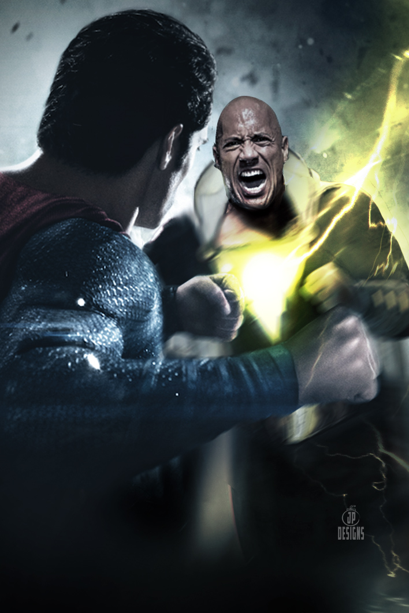
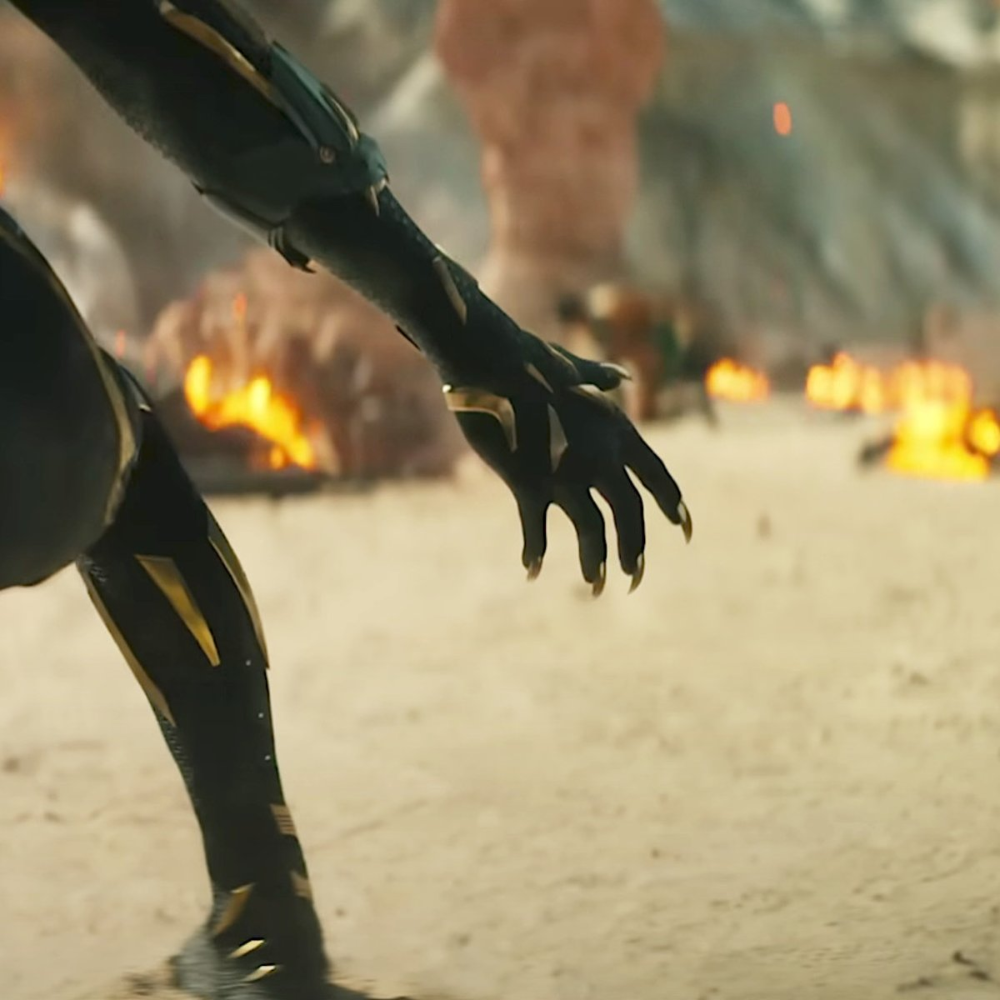
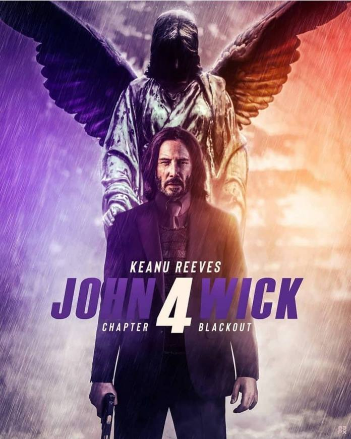

Dwayne Johnson booed by fans at SDCC as he says Black Adam could beat Superman

The San Diego International Comic Con (SDCC) is underway in the US this weekend. And already, the pop culture mega festival has given film buffs enough to binge on in terms of announcements and trailers. One of the most talked-about trailers launched at SDCC this weekend has been of the Dwayne Johnson superhero film Black Adam. Although there had been teasers and first looks of the film earlier, the SDCC sneak peek gave a better look at the popular DC antihero’s live-action debut. And fans have promptly begun asking for a Superman crossover, something that has caught Dwayne’s notice as well. But his response for what would happen in such a scenario hasn’t gone down too well with some fans.
Read more
Black Panther Wakanda Forever teaser: Marvel unleashes stunning first look at post-Chadwick Boseman Wakanda

The first look/teaser for Ryan Coogler's upcoming Black Panther 2 dropped at the San Diego Comic Con on Saturday. The film will mark the return of the Black Panther after the death of lead actor Chadwick Boseman in 2020. Chadwick died at 43 years old of colon cancer, leaving his fans across the world in in shock and grief, and the future of his Black Panther series in a limbo.
Read more
John Wick Chapter 4 teaser: Keanu Reeves meets his match in Donnie Yen, fans say 'it's been worth the wait'.

In the slick teaser for John Wick: Chapter 4, also known as John Wick 4, sees Keanu's super-assassin character facing death in thrilling action sequences. Along with Keanu's eponymous John Wick, the cast for John Wick: Chapter 4 features both former stars, as well as new character. Laurence Fishburne, Ian McShane, and Lance Reddick will also return as The Bowery King, Winston, and Charon, respectively.
Read more
Titanic actor David Warner dies at 80 from cancer-related illness
David Warner, a versatile British actor whose roles ranged from Shakespearean tragedies to sci-fi cult classics, has died. He was 80. Warner’s family said he died from a cancer-related illness on Sunday at Denville Hall, a retirement home for entertainers in London.
Read more